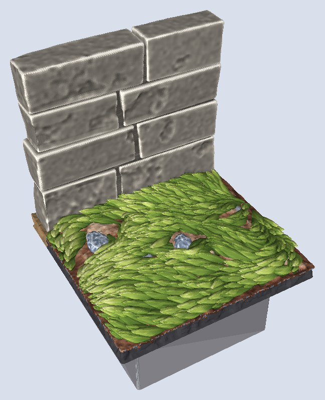
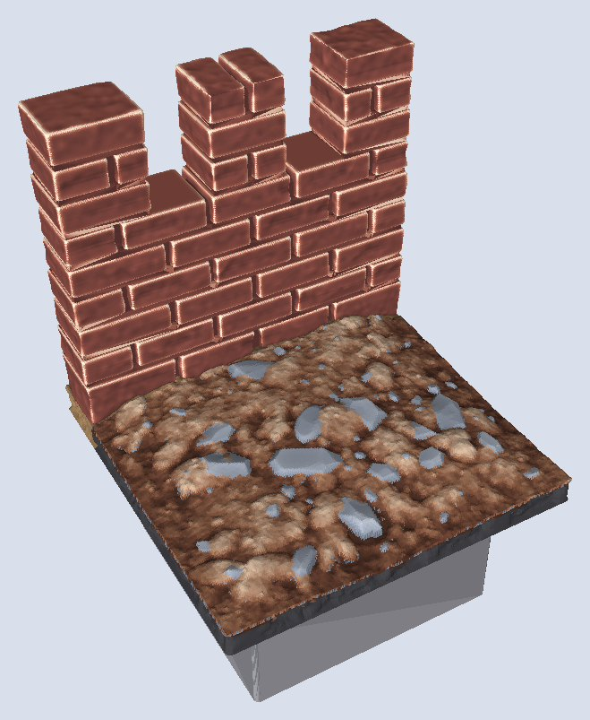
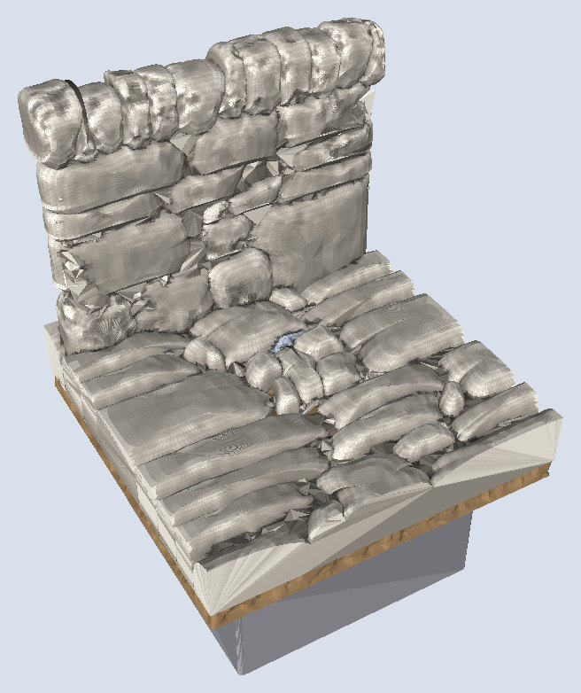
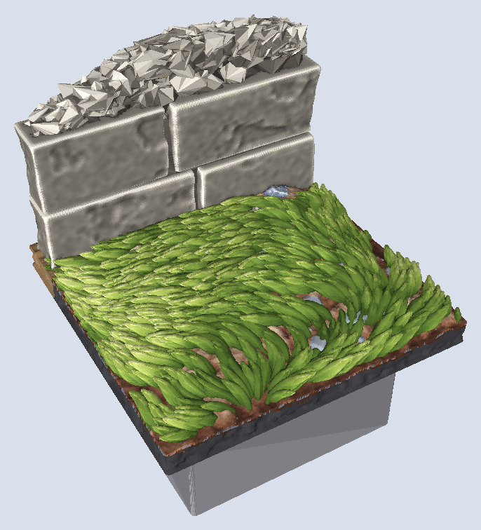

What it looks like
A wall is built stone by stone. Courses run level, joints never line up from one course to the next, and each stone sits a little proud or a little back, so it takes its own tone under a drybrush. The ends of a wall show the ends of its stones, with the joints set in behind them. The top is flat and shows the tops of the stones, not a smooth cap.
Families
| Family | What it is | Written |
|---|---|---|
| Cut stone | Long, chipped blocks in irregular courses, the classic dungeon wall. Four surface presets: chipped (default), worn, hewn, dressed. | wall style=cut-stone |
| Fieldstone | Drystone: flat, rounded natural stones packed tight with no mortar, small rough chips filling the gaps. Topped with perched stones or a row of stones on edge. | wall style=fieldstone |
| Brick | Small worn bricks with a few missing and spalled. | wall style=brick |
| Regular brick | Uniform bricks in dead-level running bond, half a brick offset per course. | wall style=regular-brick |
| Stone floor | Dressed slabs gridding the ground, one per square by default, some cracked, spalled or missing. | flagstones |
| Drystone floor | Flagstones: a fieldstone wall laid on its side. | flagstones style=fieldstone |

lib:tiles/walls/1x1-wall-stone.dtile.
top=battlements: demo/wall-battlements.dtile.
coping=on-edge on a flagstones style=fieldstone: demo/flagstones-fieldstone.dtile.
ruin="70%": a broken top with rubble showing: demo/wall-ruins.dtile.Using it in a tile
A wall must have at= a line: a tile edge, an edge path (two edges make a corner), or a drawn line:
dharmatiles version="1.0.0"
use "parts/grass" lawn
tile size="1x1" seed=62 {
stack {
base
dirt
wall at="north west" style=cut-stone seed=12 {
height full // up to the wall-top level, $wallHeight
thickness "7dmm"
}
lawn // grows up to the wall's foot
}
}The styles: style=cut-stone (the default), fieldstone (drystone, no mortar), brick and regular-brick. Each sets its own stone sizes and finish; stones, joints and edges adjust them:
wall at=north style=fieldstone {
stones height="2.2dmm .. 5.2dmm" length="5dmm .. 16dmm" texture=worn
coping on-edge // what tops a drystone wall
}Along a drawn line, side=left, right or centre says which side of the line the wall stands, as you walk it: left puts the body to the left of the direction the line is drawn, with the line as its outer face; right puts it to the right; centre (the default) centres it on the line. The wall follows the line as the tile has it, wobble included, so a new tile seed moves the wall with the line.
line lane wobble="6dmm" { through "(0sq, 1.5sq)" "(0.85sq, 1.22sq)" "(1.35sq, 0.62sq)" "(2sq, 0.5sq)" }
stack {
dirt
wall at=lane side=left style=cut-stone
}The line is cut into straight runs that stray no more than 0.35dmm from it, and a run turns at each vertex. A left turn of exactly a right angle is a corner like an edge path's, the two runs taking turns passing through it. Any other turn is a bend: the two runs overlap, the one on the outside of the turn running on past the vertex so its face is whole. A wall turns at most 150 degrees at one point. The free ends of an open line are textured ends; a line that returns to its first point makes a ring. A line that meets a tile edge ends flush with it when it meets it square, and otherwise runs on past it and is cut at the tile edge. Library: lib:tiles/walls/2x2-wall-curve.dtile. Pin a wall's look with seed= while the rest of the tile changes.
Reference
at= region, line; side=at=Controls
| Control | Takes | Default | What it does |
|---|---|---|---|
style | word | cut-stone | how stones are made and laid
|
height | length (dmm), 6 to 200 | full | height above what it stands on
|
thickness | length (dmm), 2 to 40 | 7dmm | wall thickness |
stones | group | — | stone size |
stones height | length (dmm), 1 to 40, or a range, or a weighted range | — | course height |
stones length | length (dmm), 2 to 80, or a range, or a weighted range | — | stone length along the wall |
stones texture | word | — | surface finish of each stone
|
joints | group | — | the gaps between stones |
joints width | length (dmm), 0 to 3 | — | mortar gap |
joints depth | length (dmm), 0 to 5 | — | how deep the gaps between stones look |
edges | group | — | the stone corners |
edges rounding | length (dmm), 0 to 5, or a range, or a weighted range | — | how worn the stone corners are |
coping | word | — | what tops a drystone wall
|
bond | word | — | random courses, or brick-style offsets
|
ruin | percent, 0% to 100% | — | how much has fallen |
top | word | — | castle crenellations
|
In the library
1x1-floor-stone-wall.dtilelib:tiles/floors/1x1-floor-stone-wall.dtile1x1-wall-brick-corner.dtilelib:tiles/walls/1x1-wall-brick-corner.dtile1x1-wall-brick.dtilelib:tiles/walls/1x1-wall-brick.dtile1x1-wall-fieldstone-corner.dtilelib:tiles/walls/1x1-wall-fieldstone-corner.dtile1x1-wall-fieldstone.dtilelib:tiles/walls/1x1-wall-fieldstone.dtile1x1-wall-stone-corner.dtilelib:tiles/walls/1x1-wall-stone-corner.dtile1x1-wall-stone.dtilelib:tiles/walls/1x1-wall-stone.dtile2x2-wall-curve.dtilelib:tiles/walls/2x2-wall-curve.dtile
Generated from dharmatiles elements wall by cargo xtask docs.
Floors
- The
flagstoneselement is a stone pavement: dressed slabs standing on the land to$floorHeight,7.4dmm(the official interior floor), one per square by default (slabssubdivides). About 4% of slabs are missing (dirt shows in the pits), 10% spalled and 20% cracked. - The slabs are the top. A wall written after a floor stands on the slabs, its top still at the wall-top level.
- Drystone floor:
flagstones style=fieldstonelays a fieldstone wall's stones and chinking flat, as flags.
Sizes and levels
- Height. The wall top is
33.1dmmabove the base datum, the official DungeonBlocks wall top (about 29.6 mm of visible wall above ordinary ground). A tall wall reaches72.3dmm. - Thickness.
7dmm, like the official wall slab. On a tile edge the outer face is flush with the edge and the wall stands inside the tile. - Seat. The bottom course sinks 2.5 mm into the ground, with a soil skirt around the foot. Walls assume flat ground.
Edges and joining tiles
- Two wall tiles butt-join: each wall end shows the ends of its stones with the mortar set back behind them, like the commercial pieces. Courses do not continue across the seam.
- No stone is planed flat at the tile boundary: fieldstone end stones stop 0.7 mm short of it, and a safety clip trims only what pokes past.
- At a corner the two runs take turns passing through the corner, course by course.
- Tile sizes, edge names and the edge contract are on the tile system page.
Rules
What this element always does. A change to one of these is a change to the element.
- A wall is a footprint with a texture applied, DungeonBlocks-compatible by default, standing at the wall-top level (
33.1dmm). - The cap is flat, textured as the tops of its stones. Wall ends are always textured. Walls butt-join at tile seams.
- Straight runs, right-angle corners and bends, on flat ground. A wall at a drawn line follows it in straight runs; its stones do not curve.
- Fieldstone reads as stacked stones with no mortar: each stone a distinct, morphed pebble, never fused with its neighbours, with rough little rocks as hearting.
- Walls and floors share one stone engine.
Printing and painting
- No supports. Wall faces are vertical and tops face up. Arches are built from wedge stones on jamb stacks, and nothing hangs below an arch's underside.
- Joints hold a wash. They are set 1–1.3 mm back from the faces, so a dark base wash pools there; the stone faces carry a fine relief for two drybrush tones.
- Leaves. Doors, shutters and trapdoors are a separate wood material group, so you can paint or print them in another colour. Slot leaves are separate bodies in the same STL, 0.5 mm clear of the wall: lift them out and swap them.
- One clean solid. Each wall is one watertight body, checked to survive the float32 rounding of an STL file.
The full printing rules are on the printing page.
How it is made
Step by step
A wall is laid stone by stone. Its line is split into segments, then courses and bays, and every cell becomes one stone, each its own solid. Mortared styles stand on a recessed core, so the joints read as real gaps; drystone has no core and is filled with rubble behind.
What the program does, in order:
- Spine: the line the wall follows (
at=): its outer face, with the wall's body to its left; on a tile edge, inside the tile. - Layout: courses (rows) × bays (stones along a row), with quoins alternating at corners and ends, make the cells;
top battlementsandruinedit the cells. - Stones: every cell becomes one unit: a dressed block (cut stone, brick, regular brick) or a fieldstone; its finish (
texture) is chipped, worn, hewn or dressed. - Core and joints: mortared styles stand on a recessed core and the joints are reveals onto it; drystone has no core, and rough rubble fills behind the face.
- Printability: no stone stands more than 0.45 mm proud of the one under it, and the joint width never shrinks below what prints; both stay fixed when the wall is scaled.
- Fit: the wall is the union of its stones, cut to the tile (so it butts its neighbour), and its footprint is stamped so grass grows round it.
The code: crates/dt-elements/src/wall/.
All the families share one chassis, CutStoneWall in src/dharmatiles/walls/masonry.py (line 512). A family changes the stone, not the layout.
- Layout.
_layout(line 286) splits the spine into straight segments and corner cells, samples course heights so the top lands exactly at the wall top, then cuts each course into stones, rejecting any joint that lines up with one in the course below. Corners alternate per course. Openings, battlements and ruin states edit this list of cells (_apply_openingsline 893,_crenellateline 742,_ruin_cellsline 1199). - Stones. Each cell becomes one stone. Cut stone and brick are exact rounded blocks with chipped edges and the common stone relief (the same finish as the rocks). Fieldstone (
walls/fieldstone.py, line 177) works the other way round: it draws the crack network first, with each crack shared by the stones on both sides, then morphs a pebble into each region, so neighbouring stones fit like a real drystone wall. - Core and hearting. Mortared walls have a hidden core set back from every face, which shows as the mortar. Drystone walls have no core; about a thousand small rough chips fill the inside (
_hearting_parts, line 1246). - Assembly. Stones, core and surrounds are unioned into one solid.
separate_pinchesnudges apart points where two stones only just touch, so the STL stays watertight (src/dharmatiles/stone/solidify.py:42), and the wall is clipped to the tile (line 1564). Slots are one boolean cut out of the finished wall (_cut_slots, line 848). The footprint is stamped into the ground so grass steers around it.
A floor is the same chassis laid flat: the wall's height axis becomes the second plan axis, courses become rows of slabs or boards, and each piece takes its top from the floor's band (crates/dt-elements/src/floor.rs).
Texture presets
| Preset | Chip (mm) | Rounding (mm) | Relief (mm) | Read |
|---|---|---|---|---|
chipped | 0.55 | 0.22 | 0.07 | Chipped cut stone (Hirst Arts m50) |
worn | 0.30 | 0.60 | 0.10 | Soft, weathered |
hewn | 0.80 | 0.15 | 0.16 | Rough-hewn all over |
dressed | 0.15 | 0.12 | 0.03 | Near-smooth ashlar, crisp edges |
_TEXTURES, walls/masonry.py:108.